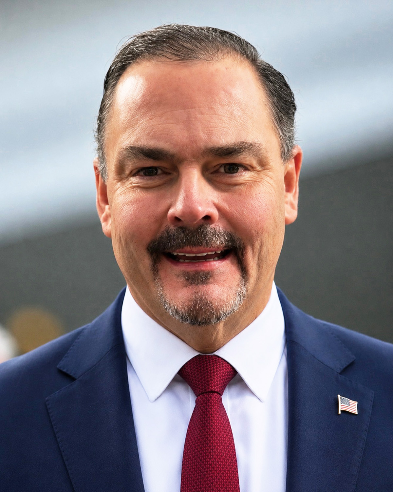

Richard “Buck” Buckman
Founder & CEO
For more than four decades, Richard “Buck” Buckman has been a trusted political strategist, government affairs professional, and relationships architect. As Founder and CEO of The Dot Connector, Buck has turned a lifetime of trusted relationships into a thriving consulting practice that helps businesses, organizations, elected officials, and entrepreneurs solve complex challenges by connecting the right people, ideas, and opportunities.
Buck’s career spans politics, government relations, economic development, media strategy, crisis management, and business consulting. He has earned the trust of leaders across government, business, and the nonprofit sector.
The philosophy behind The Dot Connector is simple but powerful: every challenge has a solution when the right people are brought together. Whether launching a company, navigating public policy, managing a crisis, expanding a business, or opening doors that once seemed impossible, Buck turns vision into action.
Throughout his career, Buck has held several influential leadership positions. As Director of Government Affairs for the nationally recognized Morelli Ratner Law Firm in New York City, he directed the firm’s Washington, D.C., operations and advised senior partners on federal and international government affairs. His work required close collaboration with Members of Congress, Senate and House leadership, executive branch officials, the White House, and leaders from both major political parties.
Earlier, Buck served as Director of Government Relations for The Eaves Law Firm, where he led congressional and government relations efforts on one of the nation’s most significant environmental health cases. Representing the people of Vieques, Puerto Rico, in their fight against the U.S. Navy’s bombing range, Buck helped generate more than twenty congressional resolutions addressing healthcare concerns and environmental justice, bringing national attention to the plight of the island’s residents.
Before entering government affairs, Buck founded Buckman & Associates, which became one of America’s most successful political consulting firms. Under his leadership, the firm compiled a record of 68 victories in 72 political campaigns, providing strategic counsel for candidates at the federal, state, and local levels, including numerous presidential campaigns. His ability to understand campaigns, messaging, coalition-building, and voter behavior established him as a respected political consultant.
What distinguishes Buck throughout his career is the relationships he has built over four decades. His network includes elected officials, corporate executives, entrepreneurs, community leaders, policy experts, media professionals, and international business leaders. Time and again, Buck has shown that meaningful relationships can accomplish what traditional consulting alone cannot.
A native of Pachuta, Mississippi, Buck studied Political Science and Economics at the University of Southern Mississippi before beginning his career on Capitol Hill working for the late Congressman Larkin Smith (R-MS). That early experience in Washington laid the foundation for a career defined by public service, strategic thinking, and leadership.
Today, Buck operates The Dot Connector from its headquarters in Diamondhead, Mississippi, with an additional office in Washington, D.C., leading a team of trusted consultants who provide strategic counsel to clients across the United States and internationally. His work includes political consulting, government affairs, business development, crisis communications, economic development, strategic partnerships, and executive advisory services.
Buckman’s career has been built on one enduring belief: “One connection is a contact. Thousands of connections, thoughtfully linked over a forty-year career, become a network capable of changing industries, shaping public policy, and moving innovation into the future.” That is The Dot Connector.
Buck is also an accomplished author and storyteller. His debut novel, Hills Over Havana, has been optioned for development as a major streaming series. Away from the office, Buck enjoys spending time with his wife, Kim, and their three beloved dogs, Hank, Branch, and Willow.